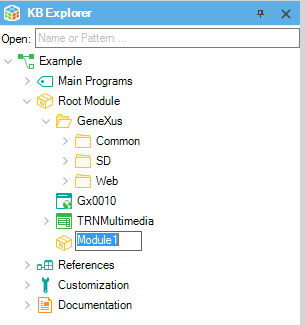

Module Objects and Folder objects are used to organize objects in a Knowledge Base. Together, they create a hierarchy tree whose root is the Root module. The hierarchy is shown in the KB Explorer. There are, however, conceptual differences between Modules and Folders.  A Module is a GeneXus object designed to make it easier to understand, maintain and integrate a Knowledge Base. • Understanding: Using Modules, developers can model how they logically break down a large, Enterprise wide, Knowledge Base. The use of modules does not change the data model.
This allows different objects to have the same Name property value if they are in different Modules.
How to decide whether to use a Folder or a ModuleUse Modules for encapsulation. Use Folders for organization within Modules.
|
| Backlinks | |
| Category:Folder object | Toc:Modules |
| Object Visibility property |